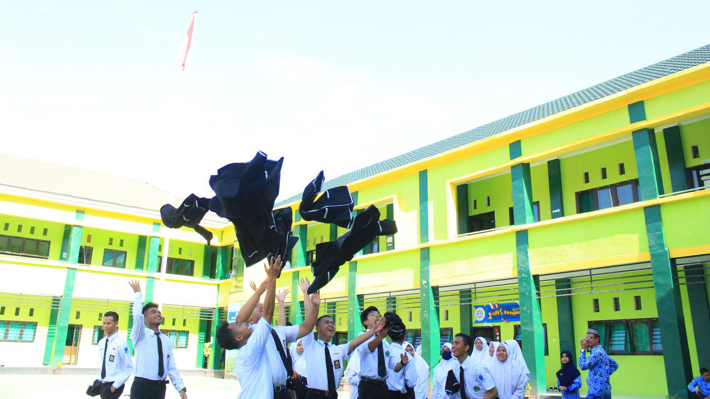

Pada tanggal 18 Juli 2016, MAN Insan Cendekia Kota Palu resmi beroperasi menjalankan kegiatan belajar mengajar yang di awali dengan masa ta'aruf
siswa madrasah yang di hadiri langsung oleh Dirjen Pendidikan Islam Kementrian Agama RI, Bapak Prof. Dr. H. Kamarudin Amin, MA yang didampingi
oleh kasubid kurikulum dirjen pendidikan islam kementrian agama Provinsi Sulawesi Tengah Bapak Drs. H.M. Syafii dan kepala bidang pendidikan madrasah
kantor wilayah kementrian agama provinsi sulawesi tengah Bapak H. Muh Junaidi serta seluruh siswa dan orang tua wali
Adapun status penegrian MAN Insan Cendekia Kota Palu diresmikan langsung oleh Mentri Agama RI, Bapak Lukman Hakim Syaifuddin, pada tanggal 23 agustus 2016.
find us on earth
Untuk memenuhi kebutuhan sumber daya manusia yang berkualitas tinggi dalam penguasaan IPTEK yang didasari nilai keimanan dan ketakwaan, pada tahun 1996 atas ide dari Prof. Dr. -Ing. Bacharuddin Jusuf Habibie, BPPT mendirikan Magnet School yang nantinya berubah namanya menjadi SMU Insan Cendekia di Serpong dan di Gorontalo melalui program penyetaraan IPTEK STEP (Science and Technology Equity Program) bagi sekolah-sekolah yang berada di lingkungan pondok pesantren.
Pada tahun pelajaran pertama (1996/1997), penerimaan siswa SMU Insan Cendekia diprioritaskan bagi siswa-siswi SMU/MA kelas satu dan siswa-siswi lulusan SMP/MTs berprestasi yang berasal dari pondok pesantren dan sekolah Islam lainnya. Akan tetapi, mulai tahun pelajaran kedua (1997/1998) SMU Insan Cendekia memberi kesempatan pula kepada siswa-siswi SLTP umum dan MTs, baik negeri maupun swasta.
Sejak tahun pelajaran 2000/2001 SMU Insan Cendekia, baik yang berada di Gorontalo maupun di Serpong, dilimpahkan pengelolaannya oleh BPPT kepada Departemen Agama RI. Untuk tetap mempertahankan ciri khas penguasaan IPTEK dan IMTAK, maka dalam pengelolaan dan pembinaannya, Departemen Agama dan BPPT terus melakukan kerja sama. Selanjutnya nama SMU Insan Cendekia ditransformasikan menjadi Madrasah Aliyah Insan Cendekia dengan tanpa mengurangi dan mengubah sistem pengajaran secara keseluruhan yang telah berjalan selama ini.
Pada tahun 2001, dengan SK Menteri Agama RI, Nomor 490 Tahun 2001 MA Insan Cendekia Serpong dan Gorontalo berubah menjadi Madrasah Aliyah Negeri (MAN) Insan Cendekia Gorontalo dan Madrasah Aliyah Negeri (MAN) Insan Cendekia Serpong.
1. Membentuk lulusan berkarakter Islami, berbudaya Indonesia, berwawasan kemanusiaan dan
kebangsaan, berwawasan lingkungan, dan mampu melakukan perubahan yang didasari oleh prinsipprinsip Islam rahmatan lil’alamin.
2. Menghasilkan lulusan yang menguasai dasar-dasar ilmu pengetahuan keislaman, sains, teknologi, ilmu sosial, dan seni-budaya untuk meraih prestasi di tingkat nasional dan internasional.
3. Membentuk lulusan yang memiliki kemampuan berpikir kritis, kecakapan berkomunikasi, bekerja sama, kreativitas yang tinggi, dan jiwa kewirausahaan untuk menghadapi persaingan global.
4. Meningkatkan kompetensi dan profesionalitas guru dan tenaga kependidikan melalui pengembangan keprofesian berkelanjutan.
5. Meningkatkan mutu dalam menjaga keseimbangan kualitas iptek dan imtak melalui penguatan program akademik dan keasramaan yang berkelanjutan.
6. Membangun sistem manajemen yang profesional, tangguh, dan terukur sehingga mampu memberdayakan diri serta memanfaatkan peluang yang ada dalam menyusun program secara optimal.
7. Menjadikan MAN Insan Cendekia Kota Palu sebagai pusat pengembangan madrasah unggul dan pembinaan sumber daya manusia dalam bidang pendidikan di Indonesia.